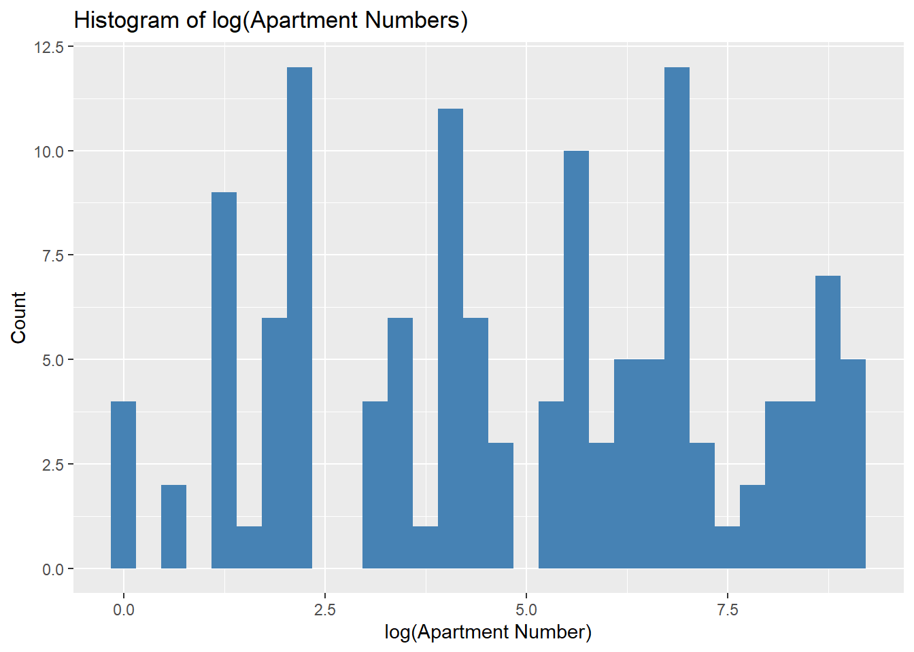
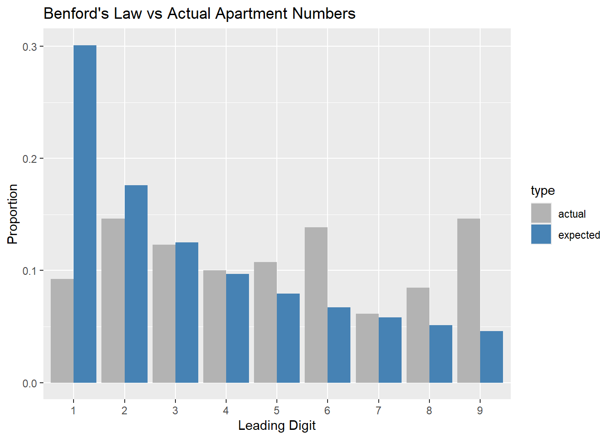

Classes and Methods for R originally developed in the
Political Science Computational Laboratory
Department of Political Science
Stanford University (2002-2015),
by and under the direction of Simon Jackman.
hurdle and zeroinfl functions by Achim Zeileis.
Attaching package: 'kableExtra'
The following object is masked from 'package:dplyr':
group_rows
kable(tab2L, caption ="Model 2L: Poisson Regression (Left Ear) – IRRs and Model Stats")
Model 2L: Poisson Regression (Left Ear) <U+2013> IRRs and Model Stats
term
IRR
CI_low
CI_high
AIC
R2
N
(Intercept)
(Intercept)
85.580
84.699
86.469
70136
0.004
2945
genderFemale
genderFemale
1.025
1.017
1.033
70136
0.004
2945
citizenNon-citizen
citizenNon-citizen
1.046
1.035
1.057
70136
0.004
2945
n_child
n_child
0.997
0.991
1.002
70136
0.004
2945
income
income
0.996
0.995
0.997
70136
0.004
2945
#(a)
# Get gender IRR and CI for model 2Lsummary(m2L)
Call:
glm(formula = tymp_L ~ gender + citizen + n_child + income, family = poisson,
data = data)
Coefficients:
Estimate Std. Error z value Pr(>|z|)
(Intercept) 4.4494518 0.0052773 843.133 < 2e-16 ***
genderFemale 0.0244740 0.0040328 6.069 1.29e-09 ***
citizenNon-citizen 0.0448951 0.0051619 8.697 < 2e-16 ***
n_child -0.0034668 0.0030127 -1.151 0.25
income -0.0037372 0.0004285 -8.721 < 2e-16 ***
---
Signif. codes: 0 '***' 0.001 '**' 0.01 '*' 0.05 '.' 0.1 ' ' 1
(Dispersion parameter for poisson family taken to be 1)
Null deviance: 52149 on 2944 degrees of freedom
Residual deviance: 51939 on 2940 degrees of freedom
AIC: 70136
Number of Fisher Scoring iterations: 4
exp(coef(m2L))
(Intercept) genderFemale citizenNon-citizen n_child
85.5800187 1.0247759 1.0459181 0.9965392
income
0.9962698
#(b)
newdata <-data.frame(gender =c("Male", "Female"),citizen ="Citizen",n_child =mean(data$n_child, na.rm =TRUE),income =mean(data$income, na.rm =TRUE))pred <-predict(m2L, newdata, type ="response", se.fit =TRUE)pred_df <-data.frame(newdata, fit = pred$fit, se = pred$se.fit)pred_df
gender citizen n_child income fit se
1 Male Citizen 0.3365025 9.259083 82.57295 0.2586147
2 Female Citizen 0.3365025 9.259083 84.61877 0.2446460
pred_df <- pred_df %>%mutate(lower = fit -1.96* se,upper = fit +1.96* se )pred <-predict(m2L, newdata, type ="link", se.fit =TRUE)diff_est <- pred$fit[2] - pred$fit[1]diff_se <-sqrt(sum(pred$se.fit^2))# z and p z_value <- diff_est / diff_sep_value <-2* (1-pnorm(abs(z_value)))data.frame(difference_on_link_scale = diff_est,z = z_value,p = p_value,significant = p_value <0.05)
difference_on_link_scale z p significant
2 0.02447396 5.741849 9.364809e-09 TRUE
Interpretation of Gender Effect in Model 2L (Left ear Poisson regression)
The incidence rate ratio (IRR) for the “genderFemale” variable is 1.025, with a 95% confidence interval [1.017, 1.033] and a p-value < 0.001. This means that, holding citizenship status, number of young children, and household income constant, females have on average a 2.5% higher expected tympanometric width in the left ear compared to males.
The result is statistically significant (z = 6.07, p = 1.29e-09). The difference on the link (log) scale is 0.0245 (also highly significant).
However, the effect size is small: although statistically significant due to the large sample size (N = 2945), the practical difference between males and females is minor.
In summary: There is strong evidence of a difference in tympanometric width between men and women (p < 0.001), but the predicted value for females is only slightly higher than for males.
Unit: microseconds
expr min lq mean median uq max neval cld
R_way 1291.700 1334.401 1520.8261 1384.0005 1602.901 2784.702 20 a
SQL_way 224.901 242.551 308.3763 304.0015 340.752 693.602 20 b
#(b)
library(DBI)library(dplyr)con <-dbConnect(RSQLite::SQLite(), "sakila_master.db")staff_df <-dbReadTable(con, "staff")country_df <-dbReadTable(con, "country")city_df <-dbReadTable(con, "city")address_df <-dbReadTable(con, "address")store_df <-dbReadTable(con, "store")staff_country <- staff_df %>%left_join(store_df, by ="store_id") %>%left_join(address_df, by =c("address_id.y"="address_id")) %>%left_join(city_df, by ="city_id") %>%left_join(country_df, by ="country_id") %>%transmute(staff_name =paste(first_name, last_name), country )print(staff_country)
staff_name country
1 Mike Hillyer Canada
2 Jon Stephens Australia
query2 <-"SELECT s.first_name || ' ' || s.last_name AS staff_name, ctry.countryFROM staff AS sJOIN store st ON s.store_id = st.store_idJOIN address a ON s.address_id = a.address_idJOIN city ci ON a.city_id = ci.city_idJOIN country ctry ON ci.country_id = ctry.country_id;"sql_result2 <-dbGetQuery(con, query2)sql_result2
staff_name country
1 Mike Hillyer Canada
2 Jon Stephens Australia
microbenchmark(R_way = { staff_country <- staff_df %>%left_join(store_df, by ="store_id") %>%left_join(address_df, by =c("address_id.y"="address_id")) %>%left_join(city_df, by ="city_id") %>%left_join(country_df, by ="country_id") %>%transmute(staff_name =paste(first_name, last_name), country ) },SQL_way = { dbGetQuery(con, query2) },times =20)
Unit: microseconds
expr min lq mean median uq max neval cld
R_way 3390.902 3528.1010 3743.9860 3628.6005 3824.452 5136.001 20 a
SQL_way 158.801 198.5015 284.5908 255.6515 318.900 630.901 20 b
#(c)
rental_df <-dbReadTable(con, "rental")payment_df <-dbReadTable(con, "payment")inventory_df <-dbReadTable(con, "inventory")film_df <-dbReadTable(con, "film")film_value <- rental_df %>%left_join(payment_df, by ="rental_id") %>%left_join(inventory_df, by ="inventory_id") %>%left_join(film_df, by ="film_id") %>%group_by(title) %>%summarise(total_revenue =sum(amount, na.rm =TRUE)) %>%filter(total_revenue ==max(total_revenue))film_value
# A tibble: 1 x 2
title total_revenue
<chr> <dbl>
1 TELEGRAPH VOYAGE 232.
query3 <-"WITH film_revenue AS ( SELECT f.title, SUM(p.amount) AS total_revenue FROM film f JOIN inventory i ON f.film_id = i.film_id JOIN rental r ON i.inventory_id = r.inventory_id JOIN payment p ON r.rental_id = p.rental_id GROUP BY f.title)SELECT title, total_revenueFROM film_revenueWHERE total_revenue = (SELECT MAX(total_revenue) FROM film_revenue);"sql_result3 <-dbGetQuery(con, query3)sql_result3
title total_revenue
1 TELEGRAPH VOYAGE 231.73
microbenchmark(R_way = { film_value <- rental_df %>%left_join(payment_df, by ="rental_id") %>%left_join(inventory_df, by ="inventory_id") %>%left_join(film_df, by ="film_id") %>%group_by(title) %>%summarise(total_revenue =sum(amount, na.rm =TRUE)) %>%filter(total_revenue ==max(total_revenue)) },SQL_way = { dbGetQuery(con, query3) },times =20)
Unit: milliseconds
expr min lq mean median uq max neval cld
R_way 9.3165 11.60635 12.77565 12.55235 13.8835 17.0372 20 a
SQL_way 35.2400 35.55000 36.77907 36.69115 37.2587 41.8190 20 b
#Prob3
library(tidyverse)
-- Attaching core tidyverse packages ------------------------ tidyverse 2.0.0 --
v forcats 1.0.0 v purrr 1.1.0
v lubridate 1.9.4 v tibble 3.3.0
-- Conflicts ------------------------------------------ tidyverse_conflicts() --
x forcats::as_factor() masks sjlabelled::as_factor(), haven::as_factor()
x ggplot2::as_label() masks sjlabelled::as_label(), dplyr::as_label()
x dplyr::filter() masks stats::filter()
x kableExtra::group_rows() masks dplyr::group_rows()
x dplyr::lag() masks stats::lag()
x sjlabelled::read_sas() masks haven::read_sas()
x sjlabelled::read_spss() masks haven::read_spss()
x sjlabelled::read_stata() masks haven::read_stata()
x car::recode() masks dplyr::recode()
x purrr::some() masks car::some()
x sjlabelled::write_sas() masks haven::write_sas()
x sjlabelled::zap_labels() masks haven::zap_labels()
i Use the conflicted package (<http://conflicted.r-lib.org/>) to force all conflicts to become errors
library(stringr)# reading in dataaustralia <-read_csv("au-500.csv")
Rows: 500 Columns: 11
-- Column specification --------------------------------------------------------
Delimiter: ","
chr (11): first_name, last_name, company_name, address, city, state, post, p...
i Use `spec()` to retrieve the full column specification for this data.
i Specify the column types or set `show_col_types = FALSE` to quiet this message.
There is 0% percentage of the websites are .com’s.
#find the most common domain name amongst the emailaustralia <- australia %>%mutate(email_domain =str_extract(email, "(?<=@).*"))most_common_domain <- australia %>%count(email_domain, sort =TRUE) %>%slice(1)most_common_domain
# A tibble: 1 x 2
email_domain n
<chr> <int>
1 hotmail.com 114
#exclude commas and whitespaceaustralia <- australia %>%mutate(non_alpha =str_detect(company_name, "[^A-Za-z ,]"))mean(australia$non_alpha, na.rm =TRUE)
[1] 0.09
#exclude ampersandsaustralia <- australia %>%mutate(non_alpha_no_amp =str_detect(company_name, "[^A-Za-z ,&]"))mean(australia$non_alpha_no_amp, na.rm =TRUE)
australia <- australia %>%mutate(apt_number =str_extract(address, "\\d+$"),apt_number =as.numeric(apt_number))# plotaustralia %>%filter(!is.na(apt_number)) %>%ggplot(aes(x =log(apt_number))) +geom_histogram(bins =30, fill ="steelblue") +labs(title ="Histogram of log(Apartment Numbers)",x ="log(Apartment Number)", y ="Count")

benford_dist <-tibble(digit =1:9,expected =log10(1+1/ (1:9)))actual <- australia %>%filter(!is.na(apt_number)) %>%mutate(first_digit =as.numeric(str_sub(as.character(apt_number), 1, 1))) %>%count(first_digit) %>%mutate(actual = n /sum(n))compare_benford <-left_join(benford_dist, actual, by =c("digit"="first_digit"))compare_benford %>%pivot_longer(cols =c(expected, actual), names_to ="type", values_to ="proportion") %>%ggplot(aes(x =factor(digit), y = proportion, fill = type)) +geom_col(position ="dodge") +labs(title ="Benford's Law vs Actual Apartment Numbers",x ="Leading Digit", y ="Proportion") +scale_fill_manual(values =c("gray70", "steelblue"))

The distribution of log-transformed apartment numbers shows multiple irregular peaks rather than a smooth right-skewed shape, suggesting that the data are not naturally occurring. Moreover, the leading-digit distribution deviates substantially from Benford’s Law, indicating that these apartment numbers are unlikely to represent real-world data. These findings are consistent with the dataset being synthetic or artificially generated.